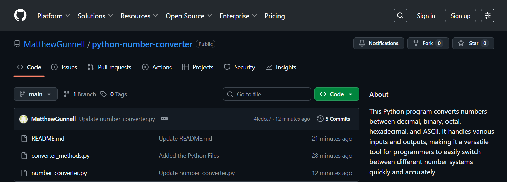

For this extracurricular project, I developed a Python program capable of converting numbers between several numerical systems: Decimal, Binary (Unsigned), Octal, and Hexadecimal. Additionally, the program can convert from these number systems to their corresponding ASCII characters whenever applicable.
I built this project in response to coursework involving number system conversions, which helped to reinforce my learning of the course material.
Tools Used: Python, Visual Studio Code
This project strengthened my technical skills in working with different numeral systems and deepened my understanding of how to implement these conversions using a high-level programming language.
